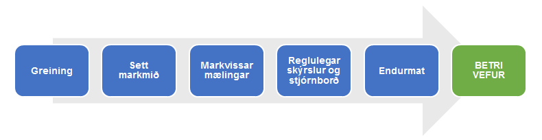
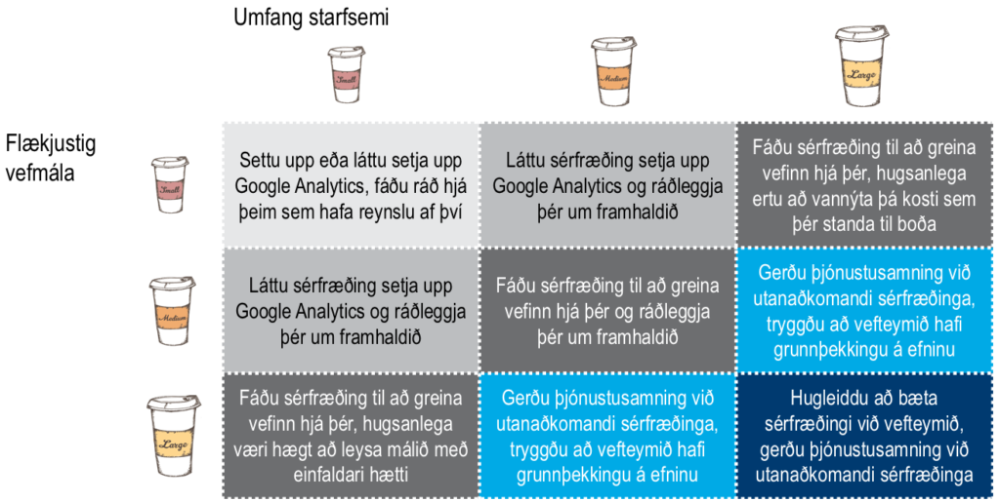

Markvissar vefmælingar: lykillinn að árangri
Þarft þú á vefmælingum að halda?
Vefmælingar eru öflugt tæki til að skilja þá sem þú skiptir við og styrkja samskiptin
Vefmælingar eiga erindi við hvern þann sem vill geta mælt árangurinn af starfi sínu.
Þetta á sérstaklega við um:
- Þá sem selja vörur eða þjónustu á netinu, annaðhvort eingöngu eða að miklu leyti
Á við: netverslanir, ferðaþjónustufyrirtæki, netbanka og flugfélög - Þá sem nota netið til að kynna stærri vörur eða flókna þjónustu
Á við: bílaumboð, ráðgjafafyrirtæki og útflutningsfyrirtæki - Efnisveitur sem byggja afkomu sína að miklu eða öllu leyti á auglýsingum
Á við: netmiðla og fjölmiðla - Þá sem veita þjónustu í gegnum vefinn
Á við: opinberar stofnanir - Þá sem vilja samþætta markaðsaðgerðir sínar
Á við: fyrirtæki sem verja umtalsverðum upphæðum í markaðssetningu og notast við ólíka miðla
Markvissar mælingar hefjast á greiningu
Vefmælingar gera þér kleift er að bera saman árangur þeirra miðla sem þú nýtir
Vefmælingar eru ekki bundnar við vefi fyrirtækja. Þær taka til allra stafrænna miðla, svo sem vefborða og annars efnis í fjölmiðlum, umsvifa á samfélagsmiðlum, póstlista og notkun á hugbúnaði, bæði í tölvum og snjalltækjum. Þeim mun fleiri miðla sem þú notast við, þeim mun ríkari er þörfin fyrir markvissar vefmælingar.
Markvissar mælingar hefjast á greiningu. Á grundvelli hennar setjum við okkur markmið til að fylgja eftir. Við þurfum með öðrum orðum að mæla réttu hlutina og þeir eru háðir viðskiptamarkmiðum fyrirtækisins. Reglulegar skýrslur og stjórnborð gera stjórnendum svo kleift að meta hvort verið sé að fara í rétta átt og grípa til aðgerða, ef þörf er á.
Niðurstaðan er betri vefur og betri nýting á fjármunum.

Hvernig er best að þú hagir þínum málum?
Lausnin ræðst af eðli þess sem við er að eiga
Skynsamlegasta skipan mála er háð annars vegar umfangi starfsemi þinnar og hinsvegar flækjustigi vefmálanna. Fáðu þá hjálp sem hentar þínum þörfum og byrjaðu að mæla.

Hver eru næstu skref?
Nýttu þér reynslu þeirra sem gengið hafa á undan þér
Mér er ekki kunnugt um aðra aðila en sjálfan mig sem sérhæfa sig í vefmælingum hérlendis, en ég hvet þig til að ræða við þá vefstofu sem þú skiptir við varðandi næstu skref (veit t.d. að Hugsmidjan.is er farin að bjóða upp á mælingar fyrir sína viðskiptavini). Þér er líka velkomið að hafa beint samband við mig eða aðila sem sem veita almenna vefráðgjöf (Funksjon.net er gott dæmi), ef þig vantar óháða ráðgjöf í þessum málum.